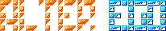

The NES game through jsnes, with the ROM compiled from this repository's src/
at build time. Keyboard, on-screen pad and gamepad-friendly controls.
The X16 port on the official X16Community WebAssembly emulator: the same
LOADER.PRG and 26 level files from x16/spike/dist/, booted in
the browser. Keyboard and gamepad.
The IIgs port on the silky-gs runtime, booted from the released 800 KiB disk by a2gsemu-ia. Q, then Y ends the game on its exit screen.
The VERA port in Apple2TS, streaming vera/build/alter-ego-vera.hdv straight
from this repository.